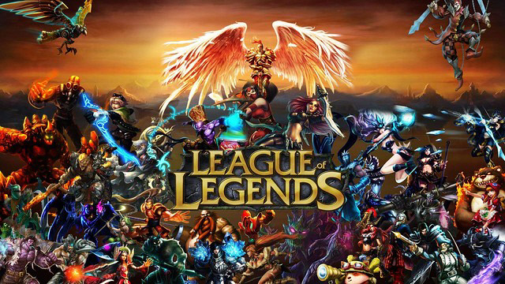

GAMES
minecraft
Legue Of Legend
rainbow six:siege
GAMES - Legue Of Legend
GAME이란?
규칙을 정해놓고 승부를 겨루는 놀이.
Legue Of Legend

라이엇 게임즈
가 개발 및 서비스 중인
MOBA 장르
의 게임. 국내에선 게임 명칭의 앞글자들을 따서 롤(LOL), 해외에서는 League등으로 불린다.
 규칙을 정해놓고 승부를 겨루는 놀이.
규칙을 정해놓고 승부를 겨루는 놀이.